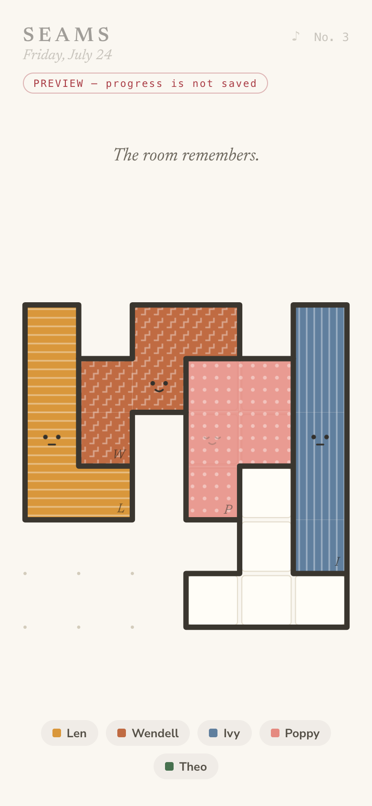
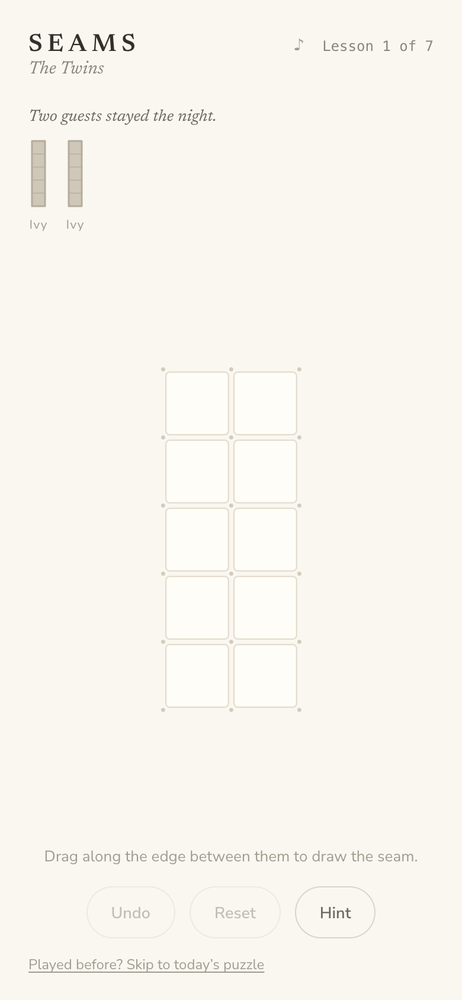
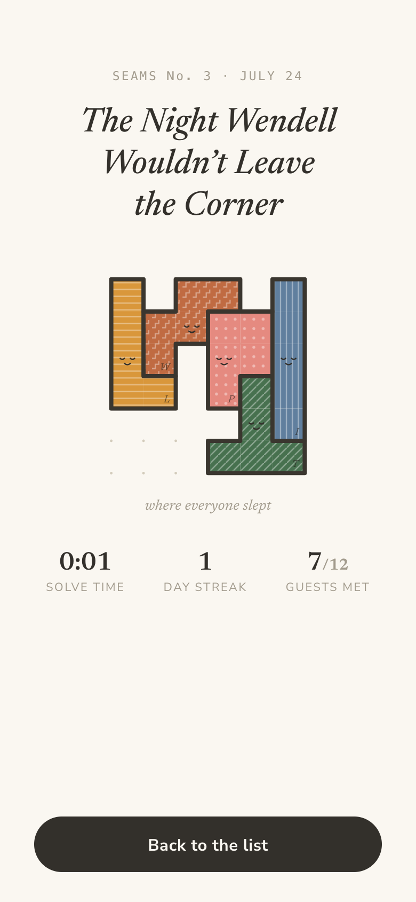

Draw the hidden borders
Each day you are shown a small room—a region of grid squares—and told which guests stayed the night. Every guest is a pentomino: five squares in a fixed shape and colour, with a name and a personality. They slept packed edge to edge, and by morning they have gone. Your job is to draw the seams: the hidden borders between where one guest ended and the next began.
While you play, the room is quiet and monochrome, like pencil on paper. The reward is the solve: your seams thicken like the lead in stained glass, each area floods with its guest’s colour and texture, and small sleeping faces appear where everyone lay. A title card names the night—“The Night Wendell Wouldn’t Leave the Corner”—because every puzzle is a tiny story about who was there.

The mechanic
The shape of the room is the clue
A bland rectangle can be tiled by the same set of pieces eight different ways—but an irregular outline, a spike here and a dent there, can pin every piece into place until exactly one arrangement survives.
Every published puzzle is machine-verified to have precisely one solution. Uniqueness cannot be eyeballed, so it is never guessed at.
The week has a shape
Weekdays climb from a gentle Monday to a hard Friday, with the grading hidden so you feel it rather than see it. Saturday is a big six-guest room. Sunday is the climax: a mystery guest—four guests are registered, but five stayed, and the room only tiles if you work out who the fifth must have been. Those puzzles are rare objects, tiling uniquely with the true cast while refusing to tile with any of the other eleven candidates.

Learning the cast
The character is the logic
The twelve pentomino letters practically beg to be characters, and each personality restates how its shape behaves. Ivy is a perfect 1×5 line and cannot turn a corner, so she is direct and no-nonsense. Wendell only ever tiles as a staircase, so he is the wanderer. Fen is the hardest piece to place, so he is shy—and quietly proud when found.
New players get a seven-lesson tutorial where each mechanic is taught by being the only possible answer, and the cast arrives gradually. Solve your first puzzle and Ivy introduces herself on a character card, in her own colour, with her own instrument.
Draw
Forgiving on a phone
A vertex-anchored drag snaps strokes to grid corners, costs more to turn than to continue, refuses to guess on diagonal movement, and lets you scrub back to un-draw. Loose and sketchy, but it rarely does the wrong thing.
Hear
Every sound synthesized
The whole game lives in C-major pentatonic so nothing can clash. Each of the twelve guests owns an instrument that restates their geometry—Wendell walks down two kalimba steps, Zed approaches every note from above.
Solve
A held breath
The final seam lands and everything goes still; the seams settle in a wave from your last stroke; the pieces pop in with a little squash and stretch, each sounding its note; the faces appear last.

Behind the daily
Secret for a year
An offline authoring toolchain generates and grades every puzzle: a solver that verifies uniqueness by exhaustive search, a region generator, a mystery-guest hunter, and a difficulty grader that simulates how a human peels a puzzle apart.
Every puzzle ever made lives in an append-only library, deduplicated under all eight rotations and reflections so the same room can never reappear in disguise. The browser ships with the rooms but not the answers—solving and reveals round-trip to a server, so a year of future puzzles is genuinely secret rather than merely obfuscated.
“The room remembers where each guest slept.”
Built spec-first over roughly two days, working conversationally with Claude (Anthropic’s AI coding agent): a written game spec and high-fidelity screen mocks came before the code, and real playtests redirected the work more than once—including a from-scratch rebuild of the touch input. Vite, React and TypeScript, SVG rendering, WebAudio synthesis, a Python authoring engine, hosted on Netlify with Cloudflare DNS. Every texture, face and sound is procedural; the game ships zero image and audio assets.
Tonight’s room is waiting.
A new puzzle every day. Draw the seams, wake the guests, and find out whose night it was.
Play Seams